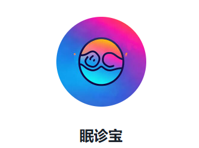

欢迎来到睡眠质量诊断助手
在这里，您可以探索知识图谱、进行AI问诊或留下宝贵的反馈。
通过构建睡眠障碍疾病诊断及推理知识图谱，我们能够将临床特征和逻辑关系相互联系，为您提供初步的睡眠疾病诊断和临床建议。
无论您是否已经出现夜间喊叫、拳打脚踢等临床表现，或是由于就诊不便而未能及时寻求专业医生的帮助，本页面都能为您提供便捷的在线服务。
请随意浏览我们的页面，开始您的健康之旅。
AI问诊
在这里，您可以直接与我们的AI健康助手进行对话，获取专业的健康建议和医疗信息。我们的AI助手可以为您提供24/7的即时咨询服务，无论是健康疑问还是疾病咨询，都能得到快速响应。
如果下面的图片无法扫码或想直接跳转，您可以通过这个链接直接访问AI问诊服务。

不良的睡眠习惯会导致失眠吗？看看你存在哪些不良的睡眠习惯:
- 忽略生物钟，熬夜超过正常就寝时间
- 周末睡懒觉，补上一周缺的觉
- 整天呆在室内，缺少户外活动
- 缺乏锻炼
- 午睡，然后希望晚上也不受影响的睡觉
- 晚饭后喝咖或含咖啡因的饮料
- 在床上看电视、使用手机、电脑等移动设备
- 在深夜进行激动人心的讨论或争论
- 睡眠环境或床不舒适

与智能体对话，获取专业健康建议
反馈
分享您的想法，帮助我们不断进步。